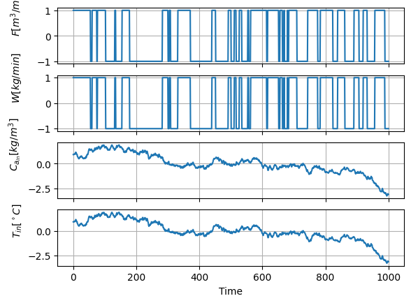
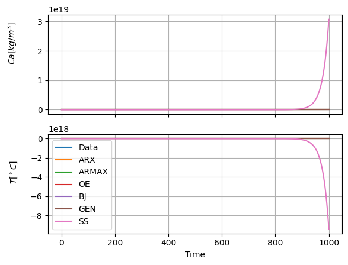
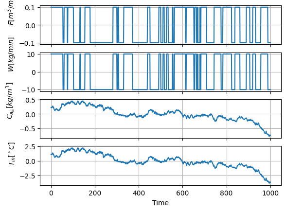
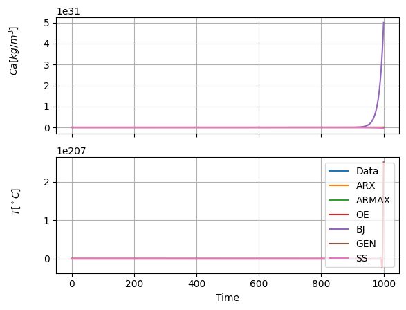

CST example¶
A Continuous Stirred Tank to be identified from input-output data
import numpy as np
from utils import plot_comparison
from sippy_unipi import SS_Model, system_identification
from sippy_unipi.datasets import gen_gbn_seq, gen_rw_seq, white_noise_var
from sippy_unipi.evaluate import validation
from sippy_unipi.ss import lsim_process_form
from sippy_unipi.typing import IOMethods
seed = 0
np.random.seed(seed)
ts = 1.0 # [min]
tfin = 1000
npts = int(tfin // ts) + 1
Time = np.linspace(0, tfin, npts)
Data¶
V = 10.0 # tank volume [m^3] --> assumed to be constant
ro = 1100.0 # solution density [kg/m^3] --> assumed to be constant
cp = 4.180 # specific heat [kJ/kg*K] --> assumed to be constant
# latent heat [kJ/kg] --> assumed to be constant (Tvap = 100°C, Pvap = 1atm)
Lam = 2272.0
# initial conditions
# Ca_0
# Tin_0
Variables¶
4 Inputs
- as v. manipulated
Input Flow rate Fin [m^3/min]
Steam Flow rate W [kg/min]
- as disturbances
Input Concentration Ca_in [kg salt/m^3 solution]
Input Temperature T_in [°C]
U = [F, W, Ca_in, T_in]
m = 4
2 Outputs
Output Concentration Ca [kg salt/m^3 solution] (Ca = Ca_out)
Output Temperature T [°C] (T = T_out)
X = [Ca, T]
p = 2
Function with Nonlinear System Dynamics¶
def Fdyn(X, U):
# Balances
# V is constant ---> perfect Level Control
# ro*F_in = ro*F_out = ro*F --> F = F_in = F_out at each instant
# Mass Balance on A
# Ca_in*F - Ca*F = V*dCA/dt
#
dx_0 = (U[2] * U[0] - X[0] * U[0]) / V
# Energy Balance
# ro*cp*F*T_in - ro*cp*F*T + W*Lam = (V*ro*cp)*dT/dt
#
dx_1 = (ro * cp * U[0] * U[3] - ro * cp * U[0] * X[1] + U[1] * Lam) / (
V * ro * cp
)
fx = np.append(dx_0, dx_1)
return fx
Build input sequences
U = np.zeros((m, npts))
manipulated inputs as GBN
Input Flow rate Fin = F = U[0] [m^3/min]
prob_switch_1 = 0.05
F_min = 0.4
F_max = 0.6
Range_GBN_1 = (F_min, F_max)
[U[0, :], _, _] = gen_gbn_seq(
npts, prob_switch_1, scale=Range_GBN_1, seed=seed
)
# Steam Flow rate W = U[1] [kg/min]
prob_switch_2 = 0.05
W_min = 20
W_max = 40
Range_GBN_2 = (W_min, W_max)
[U[1, :], _, _] = gen_gbn_seq(
npts, prob_switch_2, scale=Range_GBN_2, seed=seed
)
disturbance inputs as RW (random-walk)
Input Concentration Ca_in = U[2] [kg salt/m^3 solution]
Ca_0 = 10.0 # initial condition
sigma_Ca = 0.01 # variation
U[2, :] = gen_rw_seq(npts, Ca_0, sigma=sigma_Ca, seed=seed)
# Input Temperature T_in [°C]
Tin_0 = 25.0 # initial condition
sigma_T = 0.01 # variation
U[3, :] = gen_rw_seq(npts, Tin_0, sigma=sigma_T, seed=seed)
Collect Data¶
Output Initial conditions
Caout_0 = Ca_0
Tout_0 = (ro * cp * U[0, 0] * Tin_0 + U[1, 0] * Lam) / (ro * cp * U[0, 0])
Xo1 = Caout_0 * np.ones((1, npts))
Xo2 = Tout_0 * np.ones((1, npts))
X = np.vstack((Xo1, Xo2))
Run Simulation
for j in range(npts - 1):
# Explicit Runge-Kutta 4 (TC dynamics is integrateed by hand)
Mx = 5 # Number of elements in each time step
dt = ts / Mx # integration step
# Output & Input
X0k = X[:, j]
Uk = U[:, j]
# Integrate the model
for i in range(Mx):
k1 = Fdyn(X0k, Uk)
k2 = Fdyn(X0k + dt / 2.0 * k1, Uk)
k3 = Fdyn(X0k + dt / 2.0 * k2, Uk)
k4 = Fdyn(X0k + dt * k3, Uk)
Xk_1 = X0k + (dt / 6.0) * (k1 + 2.0 * k2 + 2.0 * k3 + k4)
X[:, j + 1] = Xk_1
Add noise (with assigned variances)
var = [0.001, 0.001]
noise = white_noise_var(npts, var, seed=seed)
Build Output
Y = X + noise
Identificatino Stage (Linear Models)¶
Orders
na_ords = [2, 2]
nb_ords = [[1, 1, 1, 1], [1, 1, 1, 1]]
nc_ords = [1, 1]
nd_ords = [1, 1]
nf_ords = [2, 2]
theta = [[1, 1, 1, 1], [1, 1, 1, 1]]
# Number of iterations
n_iter = 300
IN-OUT Models: ARX - ARMAX - OE - BJ - GEN
identification_params: dict[
IOMethods, tuple[tuple[list[int] | list[list[int]], ...], dict]
] = {
"ARX": (
(na_ords, nb_ords, theta),
{
"id_mode": "RLLS",
"centering": "MeanVal",
},
),
"ARMAX": (
(na_ords, nb_ords, nc_ords, theta),
{
"centering": "MeanVal",
"max_iter": n_iter,
"id_mode": "OPT",
},
),
"OE": (
(nb_ords, nf_ords, theta),
{
"centering": "MeanVal",
"max_iter": n_iter,
},
),
"BJ": (
(nb_ords, nc_ords, nd_ords, nf_ords, theta),
{
"centering": "MeanVal",
"max_iter": n_iter,
"stab_cons": False,
},
),
"GEN": (
(na_ords, nb_ords, nc_ords, nd_ords, nf_ords, theta),
{
"centering": "MeanVal",
"max_iter": n_iter,
"stab_cons": True,
"stab_marg": 0.98,
},
),
}
syss = []
for method, orders_params in identification_params.items():
orders, params = orders_params
sys_id = system_identification(Y, U, method, *orders, **params)
syss.append(sys_id)
/home/runner/work/SIPPY/SIPPY/sippy_unipi/utils/validation.py:51: UserWarning: One of the identified system is not stable
warn("One of the identified system is not stable")
/home/runner/work/SIPPY/SIPPY/sippy_unipi/utils/validation.py:58: UserWarning: Consider activating the stability constraint. The maximum pole is 1.0011877396688156
warn(
/home/runner/work/SIPPY/SIPPY/sippy_unipi/utils/validation.py:58: UserWarning: Consider activating the stability constraint. The maximum pole is 1.0011877396681073
warn(
SS - mimo
choose method
method = "PARSIM_K"
order = 2
sys_id = system_identification(Y, U, method, order)
if not isinstance(sys_id, SS_Model):
raise ValueError("SS model not returned")
# GETTING RESULTS (Y_id)
# SS
x_ss, Y_ss = lsim_process_form(
sys_id.A, sys_id.B, sys_id.C, sys_id.D, U, sys_id.x0
)
Ys = [Y] + [getattr(sys, "y_id") for sys in syss] + [Y_ss]
PLOTS
Inputs
fig = plot_comparison(
Time,
U,
[
"$F [m^3/min]$",
"$W [kg/min]$",
"$C_{a_{in}} [kg/m^3]$",
r"$T_{in} [^\circ{}C]$",
],
)

Outputs
fig = plot_comparison(
Time,
Ys,
["$Ca [kg/m^3]$", r"$T [^\circ{}C]$"],
legend=["Data", "ARX", "ARMAX", "OE", "BJ", "GEN", "SS"],
)

VALIDATION STAGE
Build new input sequences
U_val = np.zeros((m, npts))
manipulated inputs as GBN
Input Flow rate Fin = F = U[0] [m^3/min]
prob_switch_1 = 0.05
F_min = 0.4
F_max = 0.6
Range_GBN_1 = (F_min, F_max)
[U_val[0, :], _, _] = gen_gbn_seq(
npts, prob_switch_1, scale=Range_GBN_1, seed=seed
)
# Steam Flow rate W = U[1] [kg/min]
prob_switch_2 = 0.05
W_min = 20
W_max = 40
Range_GBN_2 = (W_min, W_max)
[U_val[1, :], _, _] = gen_gbn_seq(
npts, prob_switch_2, scale=Range_GBN_2, seed=seed
)
disturbance inputs as RW (random-walk)
Input Concentration Ca_in = U[2] [kg salt/m^3 solution]
Ca_0 = 10.0 # initial condition
sigma_Ca = 0.02 # variation
U_val[2, :] = gen_rw_seq(npts, Ca_0, sigma=sigma_Ca, seed=seed)
# Input Temperature T_in [°C]
Tin_0 = 25.0 # initial condition
sigma_T = 0.1 # variation
U_val[3, :] = gen_rw_seq(npts, Tin_0, sigma=sigma_T, seed=seed)
COLLECT DATA
Output Initial conditions
Caout_0 = Ca_0
Tout_0 = (ro * cp * U[0, 0] * Tin_0 + U[1, 0] * Lam) / (ro * cp * U[0, 0])
Xo1 = Caout_0 * np.ones((1, npts))
Xo2 = Tout_0 * np.ones((1, npts))
X_val = np.vstack((Xo1, Xo2))
Run Simulation
for j in range(npts - 1):
# Explicit Runge-Kutta 4 (TC dynamics is integrateed by hand)
Mx = 5 # Number of elements in each time step
dt = ts / Mx # integration step
# Output & Input
X0k = X_val[:, j]
Uk = U_val[:, j]
# Integrate the model
for i in range(Mx):
k1 = Fdyn(X0k, Uk)
k2 = Fdyn(X0k + dt / 2.0 * k1, Uk)
k3 = Fdyn(X0k + dt / 2.0 * k2, Uk)
k4 = Fdyn(X0k + dt * k3, Uk)
Xk_1 = X0k + (dt / 6.0) * (k1 + 2.0 * k2 + 2.0 * k3 + k4)
X_val[:, j + 1] = Xk_1
Add noise (with assigned variances)
var = [0.01, 0.05]
noise_val = white_noise_var(npts, var, seed=seed)
Build Output
Y_val = X_val + noise_val
MODEL VALIDATION
IN-OUT Models: ARX - ARMAX - OE - BJ
YS = []
for i, sys in enumerate(syss):
try:
YS.append(validation(sys, U_val, Y_val, Time, centering="MeanVal"))
except Exception as e:
raise ValueError(
f"Error in validation of model {[*identification_params.keys()][i]}:\n{e}"
)
Yv_arx, Yv_armax, Yv_oe, Yv_bj, Yv_gen = (
validation(sys, U_val, Y_val, Time, centering="MeanVal") for sys in syss
)
# SS
x_ss, Yv_ss = lsim_process_form(
sys_id.A, sys_id.B, sys_id.C, sys_id.D, U_val, sys_id.x0
)
Ys_val = [Y_val] + [Yv_arx, Yv_armax, Yv_oe, Yv_bj, Yv_gen, Yv_ss]
PLOTS
fig = plot_comparison(
Time,
U_val,
[
"$F [m^3/min]$",
"$W [kg/min]$",
"$C_{a_{in}} [kg/m^3]$",
r"$T_{in} [^\circ{}C]$",
],
)

fig = plot_comparison(
Time,
Ys_val,
["$Ca [kg/m^3]$", r"$T [^\circ{}C]$"],
legend=["Data", "ARX", "ARMAX", "OE", "BJ", "GEN", "SS"],
)
